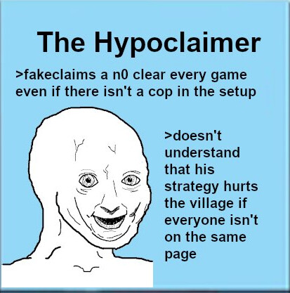

@Vulgard care to rebut marshal’s points?
preferably with a quote if you countered them anywhere else?
is vulgard trying to take a chokehold on the thread and manipulate claimed actions
if the answer is no then theyre not in countries fm meta

peek townplay
not really, no.
Hypotheticals can be a tool to help you work through possible worlds and see if they make sense or not. Which is what they do. All it does is rule out a world where that hypothetical doesn’t make sense though (in this case it doesn’t rule out me wolf, which is fine)
But reads are very widely based off of concrete tangible stuff. I’ll use my own reads
Your posts are villagery because you have a subtle self-confidence and your progression is both solid and easy to track. That isn’t a hypothetical.
“If bluelance is wolf, his VT claim could be because he had the idea to fakeclaim VT from some source and thought it was best to do it early”. That is a hypothetical
hypotheticals are ‘if’ statements and most importantly can only rule out hypothesis or not rule out hypothesis. The hypothesis of my example would be “Bluelance could fake the VT claim as wolf”, and my hypothetical serves to not rule out my hypothesis. But it isn’t used to attack bluelance in any way, only deny a village read as a refutal to a hypothetical circumstance.
vulgard’s entire case is an “if marshal is wolf…”
it never once goes into the realm of why my actions make me likelier to be wolf. All it does is rule out the idea of me not being partnered with marl. Which is fine. It’s not fine to say it makes me look worse. Because that’s logically unsound
1 Like
It’s really not that difficult.
Marshal declares there is probably a wolf between Marl and Chloe. Sure, you can walk away from that.
At EoD, she has convinced herself that Marl could be V regardless. This is when CRich is essentially lined up to be yeeted.
Note that CRich hasn’t flipped yet. So, basically, it looks like Marshal is switching her read on Marl in the last moments before it’s revealed the Chloe slot was V.
Now, why is this not a villager simply changing their mind? It could be. This part, I could still believe comes from a villager.
What matters is what comes after.
Day 2 begins, and Marshal barges in. After the Chloeslot V flip, Marshal thinks Marl is top town. Now, keep in mind that Marshal initially thought Marl vs Chloe was V/W, and toward the end of day 1, she started thinking Marl was a villager. This is fine.
What isn’t fine is that CRich’s V flip doesn’t even seem to be a factor here. Marshal’s stance at EoD1 was “okay, I think Marl might be a villager even if CRich flips town, and if CRich flips wolf he’s lock clear.” Marshal’s stance on day 2 is that Marl is top town. It doesn’t follow. Marl’s thunderdome target being V should warrant more scrutiny on Marl, not less. Marshal gaining more confidence in her V read on Marl after originally thinking Marl and Chloe were V/W does not make sense. I know she changed her Marl read at EoD1, but the read was still there. You can’t just townread someone harder after it’s revealed they argued with a villager.
A world where you do want to do this is a world where you know Marl is a wolf, because in that case, you know he’s going to look worse after the CRich flip. If you’re not planning to bus (and based on the eod 1 progression steps, wolf!Marshal definitely doesn’t plan to bus here), you want to solidify his position in the game. Claiming he’s a villager despite the flip and pointing to his tunnely behavior, similar to his towngame, is a great idea. …For a wolf who knows what she’s doing. Without knowing Marl’s a wolf, we’d likely believe this. Marl was decently townread on day 1, and Marshal’s words about Marl during day 2 (as loud as they were) would prevent us from scrutinizing him more deeply, or at least discourage us. There would be another wolf in the towncore.
But Marshal didn’t know Marl was tracked to the nightkilll at the time. Obviously, now she has to claim it was a mistaken read change, there is nothing else she can do. Would I expect that from a villager? Absolutely. But Marshal’s attitude here as she’s responding to my case feels more like a wolf annoyed she got caught, rather than a villager shoved into the PoE by mistake. The AtE element is one part of this interpretation, and the instant retaliation is another. I’m being accused of framing the situation against her when I simply think her read swap on Marl is unjustified from a V perspective. And I have just reasoned out why I think that read change is super wolfy.
Carry on.
1 Like
how about i take the wolfiest line of argument here
Vulgard is a villager but their case on Marshal isn’t quite convincing
it merits a read on Marshal that isn’t just “haha high volume go br”
but I’m not convinced by that case alone
I’ll look into t:tm:
Basically, what I’m arguing is that Marshal’s treatment of Marl makes sense if she’s a wolf but doesn’t if she’s a villager. I’m not framing anything. I’m looking at the facts and determining whether it makes sense for v!Marshal to have this thought process. And I don’t think it does.
i do not know what to think
me when I actually read vul’s argument
it feels to me like marshal was strawmanning it??
idk lol
i gtg
and not lock but i do think that Vulgard is more likely to be a villager here
Another aspect of this is that Mistyx had a vig shot, and Marl would look pretty bad off the CRich V flip considering multiple people had called his argument with Chloe V/W. You could argue Marshal is starting to “townread” Marl already at EoD1 for this exact reason. The vig needs reasons not to shoot there, so that the wolves don’t lose a member.
But that is framing, since a villager Marshal could still be wrong in the worst possible moment. See the difference?
i assume mist claimed vig d1 because there was no reason not to?
I could 100% push this in bad faith if Marshal is V. I know the exact way I would do it and the arguments I would use. I’ve just suggested one.
But I’m a villager, and I think I caught marshal shoving a wolf into the towncore. I may still change my mind, but that is what I currently believe based on Marshal’s overall treatment of Marl.
Keep this in mind if I do get killed, and do not clear Marshal.
1 Like
this is all hypothetical. I’m ignoring this. This outlines why i as wolf might swap the marl read
I’ll address this because this is tangible stuff that I can.
This still misrepresents me. because my entire marl read was “this man is very likely a villager and lock villager if crich is mafia”. I say this EoD1.
I come in with him at “very likely a villager”
I never, never, never never never said or hinted at during EoD1 that crich flipping town made marl look wolfier in my eyes. a crich town flip doesn’t change my marl read. That was very clear.
So no, i’m not going to accept being wolfread off of me not changing my marl v read off of a crich village flip. Because it was very clear it was never changing off of a crich village flip.
I can tell i’m digging myself a hole and could tell this long long ago
but i simply do not care
because I still think that he’s full of it and i’ve had to push him so hard and so long for 1 paragraph of non hypothetical evidence, which turns out to be easily refutable by one of my posts
the last sentance disproves that entire thing. He is straight up v no matter what. lock lock lock clear if and only if crich is wolf. Crich was not wolf. therefore straight up v.
damn we caught marshal and marluxion as outted wolves in one day
And the inclusion of the hypothetical as evidence against me still sits very very wrong with me. Hypotheticals are not evidence and yet they are being weaponized against me along with what are realistically valid points to make me look worse.
“This marl read is wolfy” is fine, “and she would do it because of x/y/z, which makes sense” is also fine, but then using that to fucking say it makes me worse?
Come on people
for christ’s sake
this is not good faith
we will remember you marshal farewell